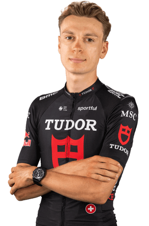

| Nombre del Datos | Resultado |
|---|---|
| Grand Prix de Plouay, of the Giro d'Italia Next Gen, of the Orlen Nations Grand Prix | 3º |
| National Championships Germany MU - ITT | 4º |
| seventh stage of the Giro d'Italia Next Gen (Possagno>Pian del Cansiglio) | 5º |
| third stage of the Orlen Nations Grand Prix (Levoča>Štrbské Pleso) | 6º |
| fifth stage of the Orlen Nations Grand Prix (Sanok>Hotel Arlamów) | 8º |
| fourth stage of the Giro d'Italia Next Gen (Morbegno>Passo dello Stelvio) | 9º |